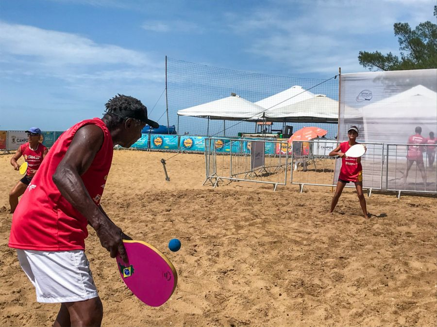

Tão antigos quanto o homem, os esportes são uma das invenções mais benéficas do homem. Além de manter o corpo saudável, ainda auxiliam na criação de uma série de comportamentos positivos, como a humildade, a união, a empatia, dentre outros.
E os esportes com bola são, sem nenhuma dúvida, os mais ppopulares. Mas você sabe a diferença entre alguns deles? É justamente isso que iremos descobrir abaixo.
| Esportes | Origem | Ambiente | Objetivo | Equipe |
| Baseboll | EUA,1971 | Campo com 1/4 de círculo, de 92 a 108,2m de raio. | baseboll |